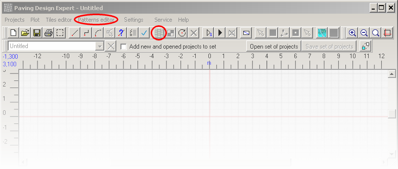
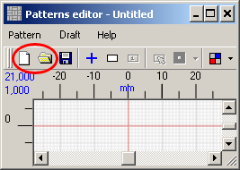
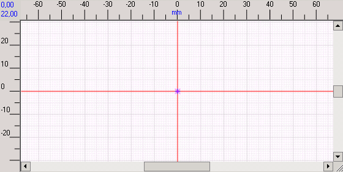
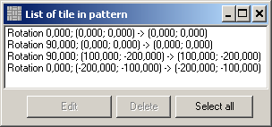
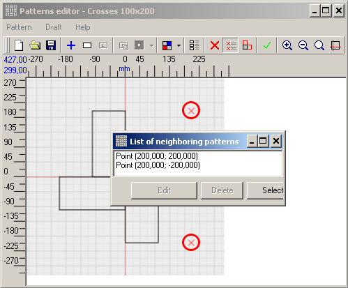
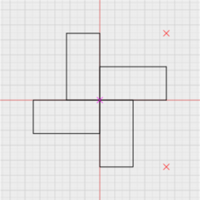
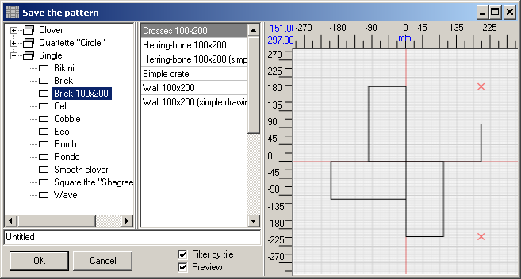

In order to activate the toolbar and menu options, create a new pattern or open an existing one.

To put the pattern on the draft, you should arrange tiles to form a pattern first:
1. Check the point on the draft where you will place a tile.
2. Click the Add tile button to open the browse window.
3. Select the tile type.
4. In the pop-up window check the point, that will superimpose another point, selected on the first step (by default, the point you started drawing the tile from is used as a reference point of the tile when creating a pattern).
5. Set the tile orientation in the same window (rotation around reference point relatively to axes of the coordinate grid).
6. Click the Add to pattern button in the same window.
Click (the Place tile button) to choose the point where the tile will be placed.

If this point identifies the first tile of the pattern it will also be the reference point of the pattern and will be marked with the purple cross.
Click (the Add tile button) and choose the tile, reference point and tile orientation in the pop-up window.

Left click to select points both on the pattern draft and on the tile. These points are displayed as blue crosses. You can modify coordinates in the tile window. Note that you can close and open this window whenever you need since all data is automatically saved every time you modify it. Right-click to open the context menu: modify the size of the coordinate grid, modify the draft's scale and open mini-display.After the tile is added to the pattern, the mark on the drawing disappears so that you can mark another point. This is done in order to avoid setting several tiles on one and the same place. If you need to edit the tiles position or delete any of them from the pattern, click this button to open the list window.

To pave the predefined area with a certain pattern, you will have to specify the reference points , where the pattern will repeat. Click (Patterns Editor toolbar) and then use left click to select points on the draft. To edit or delete layout of the neighboring patterns, click to open the list window.

Below you can see the example of a pattern formed by the right-angled tiles:

After you are done, click

After the pattern (or several patterns) was created you can begin developing your own paving projects.